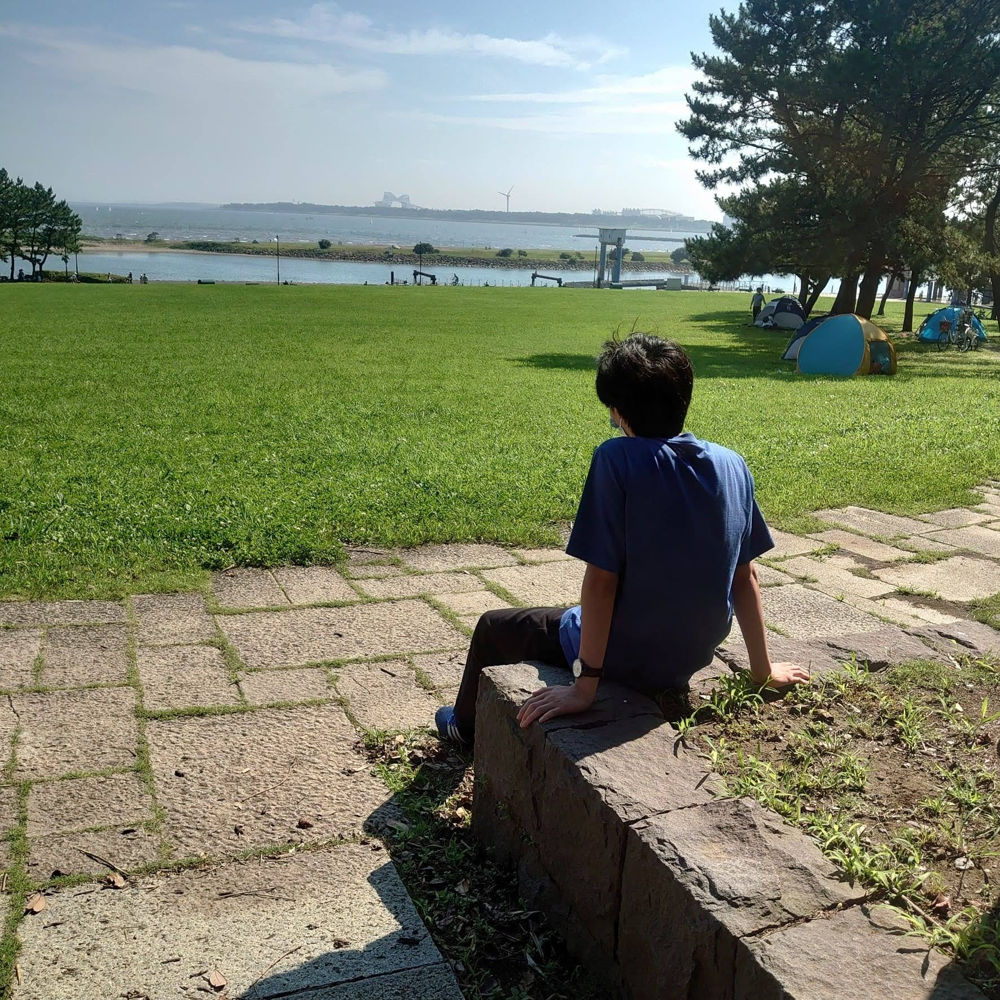

FUJIRO MIKAMI
日本工業大学 先進工学部 情報メディア工学科所属 ３年
保有資格 実用数学技能検定3級 / 実用英語技能検定準2級 / 実用英語技能検定2級 / ドイツ語検定5級 ITパスポート試験 / TOEIC IP 550点 / 情報セキュリティマネジメント試験
ABOUT
はじめまして。学部3年の大学生です。大学に入学してからITの勉強を始めました。感性工学に関する研究室に所属しています。
大学在学中の活動内容についてこのサイトにまとめています。気になるものがあればぜひ見てください。
SKILLS
TIMELINE
インターン
CTF/セキュリティキャンプ
イベント・勉強会など
資格
CONTACT
ご相談、一緒に何か挑戦したい方、感想でも大歓迎です。以下のアカウントにお気軽にご連絡ください。